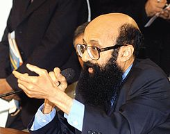

| Dr. Enéas Carneiro, Um homem fora do seu tempo | |
| "Se Versálio não tivesse tido coragem, talvez até hoje não soubéssemos anatomia, porque ele roubava cadáveres para dissecá-los. É necessário coragem, como teve, por exemplo, o primeiro homem que pôs um cateter na veia e foi até à sala de raios X para ver o cateter no coração. (…) É fundamental ter esmero, dedicação e obstinação — sem isso não se anda —, em qualquer atividade." Dr. Enéas Carneiro - 09/10/2003 |  |